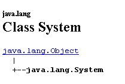

3. Klassen und Schnittstellen
3.1. Das Objekt am Beispiel
3.1.1. Allgemeines
Wir werden uns nun anhand eines Beispiels mit der objektorientierten Programmierung befassen. Ein Objekt ist eine Einheit, die Daten enthält, die seinen Zustand definieren (man nennt sie Attribute oder Eigenschaften), sowie Funktionen (man nennt sie Methoden). Ein Objekt wird nach einem Modell erstellt, das man Klasse nennt:
public class C1{
type1 p1; // Eigenschaft p1
type2 p2; // Eigenschaft p2
…
type3 m3(…){ // Methode m3
…
}
type4 m4(…){ // Methode m4
…
}
…
}
Ausgehend von der oben genannten Klasse C1 lassen sich zahlreiche Objekte O1, O2, … erstellen Alle verfügen über die Eigenschaften p1, p2, … und die Methoden m3, m4, … Sie weisen unterschiedliche Werte für ihre Eigenschaften auf, sodass jedes Objekt pi einen eigenen Zustand besitzt.
Wenn O1 ein Objekt vom Typ C1 ist, bezeichnet O1.p1 die Eigenschaft p1 von O1 und O1.m1 die Methode m1 von O1.
Betrachten wir ein erstes Objektmodell: die Klasse personne.
3.1.2. Definition der Klasse „Person“
Die Definition der Klasse personne lautet wie folgt:
import java.io.*;
public class personne{
// Attribute
private String prenom;
private String nom;
private int age;
// Methode
public void initialise(String P, String N, int age){
this.prenom=P;
this.nom=N;
this.age=age;
}
// Methode
public void identifie(){
System.out.println(prenom+","+nom+","+age);
}
}
Hier haben wir die Definition einer Klasse, also eines Datentyps. Wenn wir Variablen dieses Typs erstellen, nennen wir sie Objekte. Eine Klasse ist also eine Vorlage, anhand derer Objekte erstellt werden.
Die Mitglieder oder Felder einer Klasse können Daten oder Methoden (Funktionen) sein. Diese Felder können eines der folgenden drei Attribute haben:
privé: Ein privates Feld (private) ist ausschließlich über die internen Methoden der Klasse zugänglich
public: Ein öffentliches Feld ist für jede Funktion zugänglich, unabhängig davon, ob diese innerhalb der Klasse definiert ist oder nicht
protégé: Ein geschütztes (protected) Feld ist ausschließlich über die internen Methoden der Klasse oder eines abgeleiteten Objekts zugänglich (siehe später das Konzept der Vererbung).
Im Allgemeinen werden die Daten einer Klasse als privat deklariert, während ihre Methoden als öffentlich deklariert werden. Das bedeutet, dass der Benutzer eines Objekts (der Programmierer)
a: keinen direkten Zugriff auf die privaten Daten des Objekts hat
b: die öffentlichen Methoden des Objekts aufrufen kann, insbesondere diejenigen, die Zugriff auf dessen private Daten gewähren.
Die Syntax zur Deklaration eines Objekts lautet wie folgt:
public class nomClasse{
private donnée ou méthode privée
public donnée ou méthode publique
protected donnée ou méthode protégée
}
Remarques
- Die Reihenfolge der Deklaration der Attribute „private“, „protected“ und „public“ ist beliebig.
3.1.3. Die Methode initialisiert
Kehren wir zu unserer Klasse „person“ zurück, die wie folgt deklariert ist:
import java.io.*;
public class personne{
// Attribute
private String prenom;
private String nom;
private int age;
// Methode
public void initialise(String P, String N, int age){
this.prenom=P;
this.nom=N;
this.age=age;
}
// Methode
public void identifie(){
System.out.println(prenom+","+nom+","+age);
}
}
Welche Funktion hat die Methode initialise? Da Nachname, Vorname und Alter private Daten der Klasse „Person“ sind, lauten die Anweisungen
sind unzulässig. Wir müssen ein Objekt vom Typ personne über eine öffentliche Methode initialisieren. Dies ist die Aufgabe der Methode initialise. Wir schreiben:
Die Schreibweise p1.initialise ist zulässig, da initialise öffentlich zugänglich ist.
3.1.4. Der Operator „new“
Die Anweisungssequenz
ist fehlerhaft. Die Anweisung
erklärt p1 als Verweis auf ein Objekt vom Typ personne. Dieses Objekt existiert noch nicht, daher wird p1 nicht initialisiert. Das ist so, als würde man schreiben:
, wobei man mit dem Schlüsselwort „null“ explizit angibt, dass die Variable p1 noch auf kein Objekt verweist.
Wenn man anschließend schreibt
auf die Methode initialise des Objekts, auf das p1 verweist. Dieses Objekt existiert jedoch noch nicht, und der Compiler meldet den Fehler. Damit p1 auf ein Objekt verweist, muss man schreiben:
Dadurch wird ein noch nicht initialisiertes Objekt vom Typ personne erstellt: Die Attribute nom und prenom, bei denen es sich um Objektverweise vom Typ String handelt, erhalten den Wert null, und age den Wert 0. Es findet also eine Standardinitialisierung statt. Da p1 nun auf ein Objekt verweist, lautet die Initialisierungsanweisung für dieses Objekt
gültig.
3.1.5. Das Schlüsselwort „this“
Sehen wir uns den Code der Methode initialise an:
public void initialise(String P, String N, int age){
this.prenom=P;
this.nom=N;
this.age=age;
}
Die Anweisung this.prenom=P bedeutet, dass das Attribut prenom des aktuellen Objekts (this) den Wert P erhält. Das Schlüsselwort this bezeichnet das aktuelle Objekt: dasjenige, in dem sich die ausgeführte Methode befindet. Woher wissen wir das? Schauen wir uns an, wie die Initialisierung des Objekts erfolgt, auf das p1 im aufrufenden Programm verweist:
Es wird die Methode initialise des Objekts p1 aufgerufen. Wenn in dieser Methode auf das Objekt this verwiesen wird, wird tatsächlich auf das Objekt p1 verwiesen. Die Methode initialise hätte auch wie folgt geschrieben werden können:
public void initialise(String P, String N, int age){
prenom=P;
nom=N;
this.age=age;
}
Wenn eine Methode eines Objekts auf ein Attribut A dieses Objekts verweist, ist die Schreibweise this.A implizit. Sie muss explizit verwendet werden, wenn ein Konflikt zwischen Bezeichnern vorliegt. Dies ist bei der folgenden Anweisung der Fall:
this.age=age;
wobei age sowohl ein Attribut des aktuellen Objekts als auch den von der Methode empfangenen Parameter age bezeichnet. In diesem Fall muss die Mehrdeutigkeit beseitigt werden, indem das Attribut age als this.age bezeichnet wird.
3.1.6. Ein Testprogramm
Hier ist ein Testprogramm:
public class test1{
public static void main(String arg[]){
personne p1=new personne();
p1.initialise("Jean","Dupont",30);
p1.identifie();
}
}
Die Klasse personne ist in der Quelldatei personne.java definiert und wird kompiliert:
E:\data\serge\JAVA\BASES\OBJETS\2>javac personne.java
E:\data\serge\JAVA\BASES\OBJETS\2>dir
10/06/2002 09:21 473 personne.java
10/06/2002 09:22 835 personne.class
10/06/2002 09:23 165 test1.java
Das Gleiche machen wir für das Testprogramm:
E:\data\serge\JAVA\BASES\OBJETS\2>javac test1.java
E:\data\serge\JAVA\BASES\OBJETS\2>dir
10/06/2002 09:21 473 personne.java
10/06/2002 09:22 835 personne.class
10/06/2002 09:23 165 test1.java
10/06/2002 09:25 418 test1.class
Es mag überraschen, dass das Programm test1.java die Klasse personne nicht mit folgender Anweisung importiert:
Wenn der Compiler im Quellcode auf einen Verweis auf eine Klasse stößt, die nicht in derselben Quelldatei definiert ist, sucht er an verschiedenen Stellen nach der Klasse:
- in den Paketen, die durch die Anweisungen import importiert wurden
- im Verzeichnis, aus dem der Compiler gestartet wurde
In unserem Beispiel wurde der Compiler aus dem Verzeichnis gestartet, das die Datei personne.class enthält, was erklärt, warum er die Definition der Klasse personne gefunden hat. Wenn man in diesem Fall eine Anweisung import einfügt, führt dies zu einem Kompilierungsfehler:
E:\data\serge\JAVA\BASES\OBJETS\2>javac test1.java
test1.java:1: '.' expected
import personne;
^
1 error
Um diesen Fehler zu vermeiden und gleichzeitig daran zu erinnern, dass die Klasse „person“ importiert werden muss, schreiben wir künftig am Anfang des Programms:
Wir können nun die Datei „test1.class“ ausführen:
Es ist möglich, mehrere Klassen in einer einzigen Quelldatei zusammenzufassen. Fassen wir also die Klassen personne und test1 in der Quelldatei test2.java zusammen. Die Klasse test1 wird in test2 umbenannt, um der Änderung des Namens der Quelldatei Rechnung zu tragen:
// importierte Pakete
import java.io.*;
class personne{
// Attribute
private String prenom; // Vorname meiner Person
private String nom; // ihr Nachname
private int age; // ihr Alter
// Methode
public void initialise(String P, String N, int age){
this.prenom=P;
this.nom=N;
this.age=age;
}//initialisiert
// Methode
public void identifie(){
System.out.println(prenom+","+nom+","+age);
}//identifiziert
}//Klasse
public class test2{
public static void main(String arg[]){
personne p1=new personne();
p1.initialise("Jean","Dupont",30);
p1.identifie();
}
}
Es ist zu beachten, dass die Klasse personne das Attribut public nicht mehr besitzt. Tatsächlich kann in einer Java-Quelldatei nur eine Klasse das Attribut public haben. Dies ist die Klasse, die die Funktion main enthält. Außerdem muss die Quelldatei den Namen dieser Funktion tragen. Kompilieren wir die Datei test2.java:
E:\data\serge\JAVA\BASES\OBJETS\3>dir
10/06/2002 09:36 633 test2.java
E:\data\serge\JAVA\BASES\OBJETS\3>javac test2.java
E:\data\serge\JAVA\BASES\OBJETS\3>dir
10/06/2002 09:36 633 test2.java
10/06/2002 09:41 832 personne.class
10/06/2002 09:41 418 test2.class
Es ist zu beachten, dass für jede der in der Quelldatei enthaltenen Klassen eine .class-Datei generiert wurde. Führen wir nun die Datei test2.class aus:
Im weiteren Verlauf werden beide Methoden gleichberechtigt verwendet:
- Klassen, die in einer einzigen Quelldatei zusammengefasst sind
- eine Klasse pro Quelldatei
3.1.7. Eine weitere Methode initialisiert
Betrachten wir weiterhin die Klasse personne und fügen wir ihr die folgende Methode hinzu:
public void initialise(personne P){
prenom=P.prenom;
nom=P.nom;
this.age=P.age;
}
Es gibt nun zwei Methoden mit dem Namen initialise: Das ist zulässig, solange sie unterschiedliche Parameter akzeptieren. Das ist hier der Fall. Der Parameter ist nun eine Referenz P auf eine Person. Die Attribute der Person P werden dann dem aktuellen Objekt (this) zugewiesen. Es ist zu beachten, dass die Methode initialise direkten Zugriff auf die Attribute des Objekts P hat, obwohl diese vom Typ private sind. Dies gilt immer: Die Methoden eines Objekts O1 einer Klasse C haben immer Zugriff auf die privaten Attribute anderer Objekte derselben Klasse C.
Hier ist ein Test der neuen Klasse personne:
// Person importieren;
import java.io.*;
public class test1{
public static void main(String arg[]){
personne p1=new personne();
p1.initialise("Jean","Dupont",30);
System.out.print("p1=");
p1.identifie();
personne p2=new personne();
p2.initialise(p1);
System.out.print("p2=");
p2.identifie();
}
}
und die Ergebnisse:
3.1.8. Konstruktoren der Klasse „Person“
Ein Konstruktor ist eine Methode, die den Namen der Klasse trägt und bei der Erstellung des Objekts aufgerufen wird. Er wird in der Regel zur Initialisierung des Objekts verwendet. Es handelt sich um eine Methode, die Argumente entgegennehmen kann, aber kein Ergebnis zurückgibt. Ihrem Prototyp oder ihrer Definition geht kein Typ voraus (auch nicht void).
Wenn eine Klasse einen Konstruktor hat, der n Argumente argi akzeptiert, können die Deklaration und Initialisierung eines Objekts dieser Klasse wie folgt erfolgen:
classe objet =new classe(arg1,arg2, ... argn);
oder
classe objet;
…
objet=new classe(arg1,arg2, ... argn);
Wenn eine Klasse einen oder mehrere Konstruktoren hat, muss zwingend einer dieser Konstruktoren verwendet werden, um ein Objekt dieser Klasse zu erstellen. Wenn eine Klasse C keinen Konstruktor hat, verfügt sie über einen Standardkonstruktor, nämlich den Konstruktor ohne Parameter: public C(). Die Attribute des Objekts werden dann mit Standardwerten initialisiert. Genau das ist passiert, als wir in den vorherigen Programmen Folgendes geschrieben haben:
Erstellen wir zwei Konstruktoren für unsere Klasse personne:
public class personne{
// Attribute
private String prenom;
private String nom;
private int age;
// Konstruktoren
public personne(String P, String N, int age){
initialise(P,N,age);
}
public personne(personne P){
initialise(P);
}
// Methode
public void initialise(String P, String N, int age){
this.prenom=P;
this.nom=N;
this.age=age;
}
public void initialise(personne P){
this.prenom=P.prenom;
this.nom=P.nom;
this.age=P.age;
}
// Methode
public void identifie(){
System.out.println(prenom+","+nom+","+age);
}
}
Unsere beiden Konstruktoren beschränken sich darauf, die entsprechenden Methoden initialise aufzurufen. Zur Erinnerung: Wenn in einem Konstruktor beispielsweise die Notation initialise(P) vorkommt, übersetzt der Compiler dies in this.initialise(P). Im Konstruktor wird also die Methode initialise aufgerufen, um das Objekt zu bearbeiten, auf das this verweist, d. h. das aktuelle Objekt, das gerade erstellt wird.
Hier ist ein Testprogramm:
// import Person;
import java.io.*;
public class test1{
public static void main(String arg[]){
personne p1=new personne("Jean","Dupont",30);
System.out.print("p1=");
p1.identifie();
personne p2=new personne(p1);
System.out.print("p2=");
p2.identifie();
}
}
und die erzielten Ergebnisse:
3.1.9. Die Objektreferenzen
Wir verwenden weiterhin dieselbe Klasse personne. Das Testprogramm sieht nun wie folgt aus:
// import Person;
import java.io.*;
public class test1{
public static void main(String arg[]){
// p1
personne p1=new personne("Jean","Dupont",30);
System.out.print("p1="); p1.identifie();
// p2 verweist auf dasselbe Objekt wie p1
personne p2=p1;
System.out.print("p2="); p2.identifie();
// p3 verweist auf ein Objekt, das eine Kopie des von p1 referenzierten Objekts ist
personne p3=new personne(p1);
System.out.print("p3="); p3.identifie();
// Der Zustand des von p1 referenzierten Objekts wird geändert
p1.initialise("Micheline","Benoît",67);
System.out.print("p1="); p1.identifie();
// Da p2 = p1 ist, muss sich der Zustand des von p2 referenzierten Objekts geändert haben
System.out.print("p2="); p2.identifie();
// Da p3 nicht auf dasselbe Objekt wie p1 verweist, muss sich das von p3 referenzierte Objekt nicht geändert haben
System.out.print("p3="); p3.identifie();
}
}
Die folgenden Ergebnisse wurden erzielt:
p1=Jean,Dupont,30
p2=Jean,Dupont,30
p3=Jean,Dupont,30
p1=Micheline,Benoît,67
p2=Micheline,Benoît,67
p3=Jean,Dupont,30
Wenn man die Variable p1 wie folgt deklariert:
verweist p1 auf das Objekt personne("Jean","Dupont",30), ist aber nicht das Objekt selbst. In C würde man sagen, dass es sich um einen Zeiger handelt, c.a.d, der auf die Adresse des erstellten Objekts verweist. Wenn man anschließend schreibt:
Es wird nicht das Objekt personne("Jean","Dupont",30) geändert, sondern die Referenz p1 ändert ihren Wert. Das Objekt „person(„Jean“, „Dupont“, 30)“ geht „verloren“, wenn keine andere Variable darauf verweist.
Wenn man schreibt:
wird der Zeiger p2 initialisiert: Er „zeigt“ auf dasselbe Objekt (er verweist auf dasselbe Objekt) wie der Zeiger p1. Wenn man also das Objekt ändert, auf das p1 „zeigt“ (oder auf das es verweist), ändert man damit auch das Objekt, auf das p2 verweist.
Wenn man schreibt:
wird ein neues Objekt erstellt, das eine Kopie des von p1 referenzierten Objekts ist. Dieses neue Objekt wird von p3 referenziert. Wenn man das von p1 „verwiesene“ (oder referenzierte) Objekt ändert, hat dies keinerlei Auswirkungen auf das von p3 referenzierte Objekt. Dies zeigen die erzielten Ergebnisse.
3.1.10. Temporäre Objekte
In einem Ausdruck kann der Konstruktor eines Objekts explizit aufgerufen werden: Das Objekt wird erstellt, aber wir haben keinen Zugriff darauf (um es beispielsweise zu ändern). Dieses temporäre Objekt wird für die Auswertung des Ausdrucks erstellt und anschließend verworfen. Der von ihm belegte Speicherplatz wird später automatisch von einem Programm namens „Garbage Collector“ freigegeben, dessen Aufgabe es ist, den Speicherplatz von Objekten zurückzugewinnen, auf die von den Programmdaten nicht mehr verwiesen wird.
Betrachten wir das folgende Beispiel:
// import person;
public class test1{
public static void main(String arg[]){
new personne(new personne("Jean","Dupont",30)).identifie();
}
}
und ändern wir die Konstruktoren der Klasse personne so, dass sie eine Meldung anzeigen:
// Hersteller
public personne(String P, String N, int age){
System.out.println("Constructeur personne(String, String, int)");
initialise(P,N,age);
}
public personne(personne P){
System.out.println("Constructeur personne(personne)");
initialise(P);
}
Wir erhalten folgende Ergebnisse:
was die sukzessive Erstellung der beiden temporären Objekte zeigt.
3.1.11. Methoden zum Lesen und Schreiben privater Attribute
Wir fügen der Klasse personne die erforderlichen Methoden hinzu, um den Status der Attribute der Objekte zu lesen oder zu ändern:
public class personne{
private String prenom;
private String nom;
private int age;
public personne(String P, String N, int age){
this.prenom=P;
this.nom=N;
this.age=age;
}
public personne(personne P){
this.prenom=P.prenom;
this.nom=P.nom;
this.age=P.age;
}
public void identifie(){
System.out.println(prenom+","+nom+","+age);
}
// Zubehörhersteller
public String getPrenom(){
return prenom;
}
public String getNom(){
return nom;
}
public int getAge(){
return age;
}
//Modifikatoren
public void setPrenom(String P){
this.prenom=P;
}
public void setNom(String N){
this.nom=N;
}
public void setAge(int age){
this.age=age;
}
}
Wir testen die neue Klasse mit dem folgenden Programm:
// Personen importieren;
public class test1{
public static void main(String[] arg){
personne P=new personne("Jean","Michelin",34);
System.out.println("P=("+P.getPrenom()+","+P.getNom()+","+P.getAge()+")");
P.setAge(56);
System.out.println("P=("+P.getPrenom()+","+P.getNom()+","+P.getAge()+")");
}
}
und wir erhalten folgende Ergebnisse:
3.1.12. Methoden und Klassenattribute
Angenommen, man möchte die Anzahl der in einer Anwendung erstellten Objekte vom Typ personne zählen. Man könnte selbst einen Zähler verwalten, läuft dabei jedoch Gefahr, temporäre Objekte zu übersehen, die hier und da erstellt werden. Es erscheint sicherer, in die Konstruktoren der Klasse personne eine Anweisung einzufügen, die einen Zähler inkrementiert. Das Problem besteht darin, eine Referenz auf diesen Zähler zu übergeben, damit der Konstruktor ihn inkrementieren kann: Man muss ihnen einen neuen Parameter übergeben. Man kann den Zähler auch in die Definition der Klasse aufnehmen. Da es sich um ein Attribut der Klasse selbst und nicht um ein bestimmtes Objekt dieser Klasse handelt, deklariert man ihn anders mit dem Schlüsselwort static:
Um darauf zu verweisen, schreibt man personne.nbPersonnes, um zu zeigen, dass es sich um ein Attribut der Klasse personne selbst handelt. Hier haben wir ein privates Attribut erstellt, auf das man außerhalb der Klasse keinen direkten Zugriff hat. Daher erstellen wir eine öffentliche Methode, um Zugriff auf das Klassenattribut nbPersonnes zu gewähren. Um den Wert von nbPersonnes abzurufen, benötigt die Methode kein bestimmtes Objekt: Tatsächlich ist nbPersonnes kein Attribut eines bestimmten Objekts, sondern das Attribut einer ganzen Klasse. Daher benötigen wir eine Klassenmethode, die ebenfalls als static deklariert ist:
die von außen mit der Syntax personne.getNbPersonnes() aufgerufen wird. Hier ein Beispiel.
Die Klasse personne sieht dann wie folgt aus:
public class personne{
// Klassenattribut
private static long nbPersonnes=0;
// Objektattribute
…
// Konstruktoren
public personne(String P, String N, int age){
initialise(P,N,age);
nbPersonnes++;
}
public personne(personne P){
initialise(P);
nbPersonnes++;
}
// Methode
…
// Klassenmethode
public static long getNbPersonnes(){
return nbPersonnes;
}
}// Klasse
Mit folgendem Programm:
// import person;
public class test1{
public static void main(String arg[]){
personne p1=new personne("Jean","Dupont",30);
personne p2=new personne(p1);
new personne(p1);
System.out.println("Nombre de personnes créées : "+personne.getNbPersonnes());
}// main
}//test1
ergibt sich folgendes Ergebnis:
3.1.13. Übergabe eines Objekts an eine Funktion
Wir haben bereits erwähnt, dass Java die tatsächlichen Parameter einer Funktion per Wert übergibt: Die Werte der tatsächlichen Parameter werden in die formalen Parameter kopiert. Eine Funktion kann daher die tatsächlichen Parameter nicht ändern.
Im Falle eines Objekts darf man sich nicht von der sprachlichen Ungenauigkeit täuschen lassen, die systematisch auftritt, wenn von einem „Objekt“ statt von einer „Objektreferenz“ gesprochen wird. Ein Objekt wird ausschließlich über eine Referenz (einen Zeiger) auf dieses Objekt manipuliert. Was also an eine Funktion übergeben wird, ist nicht das Objekt selbst, sondern eine Referenz auf dieses Objekt. Es ist also der Wert der Referenz und nicht der Wert des Objekts selbst, der in den formalen Parameter kopiert wird: Es wird kein neues Objekt erstellt.
Wird eine Objektreferenz R1 an eine Funktion übergeben, wird sie in den entsprechenden formalen Parameter R2 kopiert. Daher verweisen die Referenzen R2 und R1 auf dasselbe Objekt. Wenn die Funktion das Objekt ändert, auf das R2 verweist, ändert sie natürlich auch das Objekt, auf das R1 verweist, da es sich um dasselbe Objekt handelt.

Dies zeigt das folgende Beispiel:
// import Person;
public class test1{
public static void main(String arg[]){
personne p1=new personne("Jean","Dupont",30);
System.out.print("Paramètre effectif avant modification : ");
p1.identifie();
modifie(p1);
System.out.print("Paramètre effectif après modification : ");
p1.identifie();
}// main
private static void modifie(personne P){
System.out.print("Paramètre formel avant modification : ");
P.identifie();
P.initialise("Sylvie","Vartan",52);
System.out.print("Paramètre formel après modification : ");
P.identifie();
}// modifiziere
}// Klasse
Die Methode modifie wird als static deklariert, da es sich um eine Klassenmethode handelt: Zum Aufruf muss ihr kein Objekt vorangestellt werden. Die Ergebnisse lauten wie folgt:
Constructeur personne(String, String, int)
Paramètre effectif avant modification : Jean,Dupont,30
Paramètre formel avant modification : Jean,Dupont,30
Paramètre formel après modification : Sylvie,Vartan,52
Paramètre effectif après modification : Sylvie,Vartan,52
Es ist ersichtlich, dass nur ein Objekt erstellt wurde: nämlich das der Person p1 aus der Funktion main, und dass das Objekt tatsächlich durch die Funktion modifie geändert wurde.
3.1.14. Die Ausgabeparameter einer Funktion in einem Objekt kapseln
Aufgrund der Wertübergabe ist es in Java nicht möglich, eine Funktion zu schreiben, die beispielsweise Ausgabeparameter vom Typ int hätte, da man die Referenz eines Typs int, der kein Objekt ist, nicht übergeben kann. Man kann daher eine Klasse erstellen, die den Typ int kapseln:
public class entieres{
private int valeur;
public entieres(int valeur){
this.valeur=valeur;
}
public void setValue(int valeur){
this.valeur=valeur;
}
public int getValue(){
return valeur;
}
}
Die vorstehende Klasse verfügt über einen Konstruktor zum Initialisieren einer Ganzzahl sowie über zwei Methoden zum Auslesen und Ändern des Werts dieser Ganzzahl. Wir testen diese Klasse mit dem folgenden Programm:
// import integers;
public class test2{
public static void main(String[] arg){
entieres I=new entieres(12);
System.out.println("I="+I.getValue());
change(I);
System.out.println("I="+I.getValue());
}
private static void change(entieres entier){
entier.setValue(15);
}
}
und man erhält folgende Ergebnisse:
3.1.15. Ein Array von Personen
Ein Objekt ist ein Datenelement wie jedes andere, und als solches können mehrere Objekte in einem Array zusammengefasst werden:
// import Person;
public class test1{
public static void main(String arg[]){
personne[] amis=new personne[3];
System.out.println("----------------");
amis[0]=new personne("Jean","Dupont",30);
amis[1]=new personne("Sylvie","Vartan",52);
amis[2]=new personne("Neil","Armstrong",66);
int i;
for(i=0;i<amis.length;i++)
amis[i].identifie();
}
}
Die Anweisung „person[] friends = new person[3];“ erstellt ein Array mit 3 Elementen vom Typ personne. Diese drei Elemente werden hier mit den Werten null und c.a.d initialisiert, wobei sie auf kein Objekt verweisen. Auch hier spricht man – im weiteren Sinne – von einem Objektarray, obwohl es sich lediglich um ein Array von Objektverweisen handelt. Die Erstellung des Objektarrays – das selbst ein Objekt ist (Vorhandensein von new) – erzeugt also an sich noch keine Objekte des Typs seiner Elemente: Dies muss anschließend erfolgen.
Man erhält folgende Ergebnisse:
----------------
Constructeur personne(String, String, int)
Constructeur personne(String, String, int)
Constructeur personne(String, String, int)
Jean,Dupont,30
Sylvie,Vartan,52
Neil,Armstrong,66
3.2. Das Vermächtnis durch Vorbild
3.2.1. Allgemeines
Wir befassen uns hier mit dem Begriff der Vererbung. Das Ziel der Vererbung ist es, eine bestehende Klasse so „anzupassen“, dass sie unseren Anforderungen entspricht. Nehmen wir an, wir möchten eine Klasse enseignant erstellen: Ein Lehrer ist eine besondere Person. Er verfügt über Attribute, die eine andere Person nicht hat: zum Beispiel das Fach, das er unterrichtet. Aber er hat auch die Attribute jeder Person: Vorname, Nachname und Alter. Ein Lehrer gehört also vollständig zur Klasse personne, verfügt jedoch über zusätzliche Attribute. Anstatt eine Klasse enseignant von Grund auf neu zu definieren, wäre es sinnvoller, auf die bereits vorhandene Klasse personne zurückzugreifen und diese an die besonderen Merkmale von Lehrern anzupassen. Das Konzept der Vererbung ermöglicht uns genau das.
Um auszudrücken, dass die Klasse enseignant die Eigenschaften der Klasse personne erbt, schreibt man:
public class enseignant extends personne
personne wird als übergeordnete Klasse (oder Mutterklasse) und enseignant als abgeleitete Klasse (oder Tochterklasse) bezeichnet. Ein Objekt enseignant verfügt über alle Eigenschaften eines Objekts personne: Es hat dieselben Attribute und dieselben Methoden. Diese Attribute und Methoden der übergeordneten Klasse werden in der Definition der untergeordneten Klasse nicht wiederholt: Man beschränkt sich darauf, die von der untergeordneten Klasse hinzugefügten Attribute und Methoden anzugeben:
class enseignant extends personne{
// Attribute
private int section;
// Konstruktor
public enseignant(String P, String N, int age,int section){
super(P,N,age);
this.section=section;
}
}
Wir gehen davon aus, dass die Klasse personne wie folgt definiert ist:
public class personne{
private String prenom;
private String nom;
private int age;
public personne(String P, String N, int age){
this.prenom=P;
this.nom=N;
this.age=age;
}
public personne(personne P){
this.prenom=P.prenom;
this.nom=P.nom;
this.age=P.age;
}
public String identite(){
return "personne("+prenom+","+nom+","+age+")";
}
// Zugriffsmethoden
public String getPrenom(){
return prenom;
}
public String getNom(){
return nom;
}
public int getAge(){
return age;
}
//Modifizierer
public void setPrenom(String P){
this.prenom=P;
}
public void setNom(String N){
this.nom=N;
}
public void setAge(int age){
this.age=age;
}
}
Die Methode identifie wurde geringfügig geändert, um eine Zeichenfolge zur Identifizierung der Person zurückzugeben, und trägt nun den Namen identite. Hier erweitert die Klasse enseignant die Methoden und Attribute der Klasse personne um:
- ein Attribut section, das die Nummer der Sektion angibt, zu der der Lehrer im Lehrerkollegium gehört (grob gesagt eine Sektion pro Fach)
- einen neuen Konstruktor, mit dem alle Attribute eines Lehrers initialisiert werden können
3.2.2. Erstellung eines Lehrerkörpers-Objekts
Der Konstruktor der Klasse enseignant lautet wie folgt:
// Konstruktor
public enseignant(String P, String N, int age,int section){
super(P,N,age);
this.section=section;
}
Die Anweisung super(P,N,age) ist ein Aufruf des Konstruktors der übergeordneten Klasse, in diesem Fall der Klasse personne. Es ist bekannt, dass dieser Konstruktor die Felder „Vorname“, „Nachname“ und „age“ des Objekts „personne“ initialisiert, das im Objekt „étudiant“ enthalten ist. Das erscheint recht kompliziert, und man könnte es vorziehen, Folgendes zu schreiben:
// Konstruktor
public enseignant(String P, String N, int age,int section){
this.prenom=P;
this.nom=N
this.age=age
this.section=section;
}
Das ist nicht möglich. Die Klasse personne hat ihre drei Felder prenom, nom und age als privat (private) deklariert. Nur Objekte derselben Klasse haben direkten Zugriff auf diese Felder. Alle anderen Objekte, einschließlich untergeordneter Objekte wie in diesem Fall, müssen über öffentliche Methoden darauf zugreifen. Dies wäre anders gewesen, wenn die Klasse personne die drei Felder als geschützt (protected) deklariert hätte: In diesem Fall hätten abgeleitete Klassen direkten Zugriff auf die drei Felder gehabt. In unserem Beispiel war die Verwendung des Konstruktors der übergeordneten Klasse daher die richtige Lösung und entspricht der üblichen Vorgehensweise: Beim Erstellen eines untergeordneten Objekts wird zunächst der Konstruktor des übergeordneten Objekts aufgerufen und anschließend die für das untergeordnete Objekt (in unserem Beispiel section) spezifischen Initialisierungen vorgenommen.
Versuchen wir es mit einem ersten Programm:
// Person importieren;
// import Lehrer;
public class test1{
public static void main(String arg[]){
System.out.println(new enseignant("Jean","Dupont",30,27).identite());
}
}
Dieses Programm beschränkt sich darauf, ein Objekt enseignant (new) anzulegen und es zu identifizieren. Die Klasse enseignant verfügt über keine Methode identité, ihre übergeordnete Klasse besitzt jedoch eine solche, die zudem öffentlich ist: Durch Vererbung wird sie zu einer öffentlichen Methode der Klasse enseignant.
Die Quelldateien der Klassen werden in einem Verzeichnis zusammengefasst und anschließend kompiliert:
E:\data\serge\JAVA\BASES\OBJETS\4>dir
10/06/2002 10:00 765 personne.java
10/06/2002 10:00 212 enseignant.java
10/06/2002 10:01 192 test1.java
E:\data\serge\JAVA\BASES\OBJETS\4>javac *.java
E:\data\serge\JAVA\BASES\OBJETS\4>dir
10/06/2002 10:00 765 personne.java
10/06/2002 10:00 212 enseignant.java
10/06/2002 10:01 192 test1.java
10/06/2002 10:02 316 enseignant.class
10/06/2002 10:02 1 146 personne.class
10/06/2002 10:02 550 test1.class
Die Datei test1.class wird ausgeführt:
3.2.3. Überladen einer Methode
Im vorherigen Beispiel hatten wir die Identität des Lehrers aus dem Teil personne, aber es fehlen bestimmte klassenbezogene Informationen aus der Klasse enseignant (der Abschnitt). Daher müssen wir eine Methode schreiben, mit der der Lehrer identifiziert werden kann:
class enseignant extends personne{
int section;
public enseignant(String P, String N, int age,int section){
super(P,N,age);
this.section=section;
}
public String identite(){
return "enseignant("+super.identite()+","+section+")";
}
}
Die Methode identite der Klasse enseignant stützt sich auf die Methode identite ihrer übergeordneten Klasse (super.identite), um ihren Teil „personne“ anzuzeigen, und ergänzt diesen anschließend um das Feld section, das der Klasse enseignant eigen ist.
Die Klasse enseignant verfügt nun über zwei Methoden identite:
- die von der übergeordneten Klasse personne geerbte
- eine eigene
Wenn E ein Objekt vom Typ enseignant ist, bezeichnet E.identite die Methode identite der Klasse enseignant. Man sagt, dass die Methode identite der übergeordneten Klasse durch die Methode identite der untergeordneten Klasse „überladen“ wird. Allgemein gilt: Wenn O ein Objekt und M eine Methode ist, sucht das System zur Ausführung der Methode O.M nach einer Methode M in der folgenden Reihenfolge:
- in der Klasse des Objekts O
- in seiner übergeordneten Klasse, falls vorhanden
- in der übergeordneten Klasse der übergeordneten Klasse, sofern diese existiert
- usw.
Die Vererbung ermöglicht es also, in der Tochterklasse gleichnamige Methoden der Elternklasse zu überschreiben. Dadurch lässt sich die Tochterklasse an ihre eigenen Anforderungen anpassen. In Verbindung mit dem Polymorphismus, den wir etwas später behandeln werden, ist die Methodenüberschreibung der Hauptvorteil der Vererbung.
Betrachten wir dasselbe Beispiel wie zuvor:
// import Person;
// import Lehrer;
public class test1{
public static void main(String arg[]){
System.out.println(new enseignant("Jean","Dupont",30,27).identite());
}
}
Die Ergebnisse lauten diesmal wie folgt:
3.2.4. Polymorphismus
Betrachten wir eine Klassehierarchie: C0 C1 C2 … Cn
wobei Ci Cj angibt, dass die Klasse Cj von der Klasse Ci abgeleitet ist. Daraus folgt, dass die Klasse Cj alle Merkmale der Klasse Ci sowie weitere Merkmale aufweist. Seien Oi Objekte vom Typ Ci. Es ist zulässig, Folgendes zu schreiben:
Tatsächlich verfügt die Klasse Cj durch Vererbung über alle Merkmale der Klasse Ci sowie über weitere. Somit enthält ein Objekt Oj vom Typ Cj ein Objekt vom Typ Ci. Die Operation
bewirkt, dass Oi eine Referenz auf das Objekt vom Typ Ci ist, das im Objekt Oj enthalten ist.
Die Tatsache, dasseine Variable Oi der Klasse Ci tatsächlich nicht nur auf ein Objekt der Klasse Ci verweisen kann, sondern auf jedes von der Klasse Ci abgeleitete Objekt, wird als Polymorphismus bezeichnet: die Fähigkeit einer Variablen, auf verschiedene Objekttypen zu verweisen.
Nehmen wir ein Beispiel und betrachten wir die folgende klassenunabhängige Funktion:
Die Klasse Object ist die „Mutter“ aller Java-Klassen. Wenn man also schreibt:
schreibt man implizit:
Somit enthält jedes Java-Objekt einen Teil vom Typ Object. Man könnte also schreiben:
Der formale Parameter vom Typ Object der Funktion „affiche“ erhält einen Wert vom Typ enseignant. Da „enseignant“ von Object abgeleitet ist, ist dies zulässig.
3.2.5. Überladung und Polymorphismus
Ergänzen wir unsere Funktion affiche:
Die Methode obj.toString() gibt eine Zeichenkette zurück, die das Objekt obj in der Form nom_de_la_classe@adresse_de_l'Objekt identifiziert. Was passiert in unserem vorherigen Beispiel:
Das System muss die Anweisung System.out.println(e.toString()) ausführen, wobei e ein Lehrobjekt ist. Es sucht nach einer Methode toString in der Klassenhierarchie, die zur Klasse enseignant führt, beginnend mit der letzten:
- In der Klasse enseignant findet er keine Methode toString()
- In der übergeordneten Klasse personne findet er keine Methode toString()
- in der übergeordneten Klasse Object findet er die Methode toString() und führt sie aus
Dies zeigt das folgende Programm:
// Person importieren;
// Lehrer importieren;
public class test1{
public static void main(String arg[]){
enseignant e=new enseignant("Lucile","Dumas",56,61);
affiche(e);
personne p=new personne("Jean","Dupont",30);
affiche(p);
}
public static void affiche(Object obj){
System.out.println(obj.toString());
}
}
Die folgenden Ergebnisse wurden erzielt:
Das heißt, das Objekt „nom_de_la_classe@adresse_de_l“. Da dies nicht sehr aussagekräftig ist, ist man versucht, eine Methode toString für die Klassen personne und etudiant zu definieren, die die Methode toString der übergeordneten Klasse Object überschreiben würde. Anstatt Methoden zu schreiben, die den bereits in den Klassen personne und enseignant vorhandenen Methoden identite ähneln würden, begnügen wir uns damit, diese Methoden identite in toString umzubenennen:
public class personne{
...
public String toString(){
return "personne("+prenom+","+nom+","+age+")";
}
...
}
class enseignant extends personne{
int section;
…
public String toString(){
return "enseignant("+super.toString()+","+section+")";
}
}
Mit demselben Testprogramm wie zuvor wurden folgende Ergebnisse erzielt:
3.3. Interne Klassen
Eine Klasse kann die Definition einer anderen Klasse enthalten. Betrachten wir das folgende Beispiel:
// importierte Klassen
import java.io.*;
public class test1{
// interne Klasse
private class article{
// Struktur definieren
private String code;
private String nom;
private double prix;
private int stockActuel;
private int stockMinimum;
// Konstruktor
public article(String code, String nom, double prix, int stockActuel, int stockMinimum){
// Initialisierung der Attribute
this.code=code;
this.nom=nom;
this.prix=prix;
this.stockActuel=stockActuel;
this.stockMinimum=stockMinimum;
}//Konstruktor
//toString
public String toString(){
return "article("+code+","+nom+","+prix+","+stockActuel+","+stockMinimum+")";
}//toString
}//Artikelklasse
// Lokale Daten
private article art=null;
// Hersteller
public test1(String code, String nom, double prix, int stockActuel, int stockMinimum){
// Attributdefinition
art=new article(code, nom, prix, stockActuel,stockMinimum);
}//test1
// Zugriffsmethode
public article getArticle(){
return art;
}//getArticle
public static void main(String arg[]){
// Erstellung einer Instanz „test1“
test1 t1=new test1("a100","velo",1000,10,5);
// Anzeige test1.art
System.out.println("art="+t1.getArticle());
}//Hauptprogramm
}// Ende der Klasse
Die Klasse test1 enthält die Definition einer weiteren Klasse, nämlich der Klasse article. Man sagt, dass article eine interne Klasse der Klasse test1 ist. Dies kann nützlich sein, wenn die interne Klasse nur in der Klasse, die sie enthält, von Nutzen ist. Bei der Kompilierung des oben genannten Quellcodes test1.java erhält man zwei .class-Dateien:
E:\data\serge\JAVA\classes\interne>dir
05/06/2002 17:26 1 362 test1.java
05/06/2002 17:26 941 test1$article.class
05/06/2002 17:26 1 020 test1.class
Für die Klasse article, die in der Klasse test1 enthalten ist, wurde eine Datei test1$article.class generiert. Führt man das obige Programm aus, erhält man folgende Ergebnisse:
3.4. Schnittstellen
Eine Schnittstelle ist eine Sammlung von Prototypen von Methoden oder Eigenschaften, die einen Vertrag bilden. Eine Klasse, die sich entscheidet, eine Schnittstelle zu implementieren, verpflichtet sich, eine Implementierung aller in der Schnittstelle definierten Methoden bereitzustellen. Der Compiler überprüft diese Implementierung.
Hier ist beispielsweise die Definition der Schnittstelle java.util.Enumeration:
Methodenzusammenfassung | ||
boolean | hasMoreElements() Prüft, ob diese Aufzählung weitere Elemente enthält. | |
Objekt | nextElement() Gibt das nächste Element dieser Aufzählung zurück, sofern dieses Aufzählungsobjekt noch mindestens ein weiteres Element bereithält. | |
Jede Klasse, die diese Schnittstelle implementiert, wird wie folgt deklariert:
Die Methoden hasMoreElements() und nextElement() müssen in der Klasse C definiert werden.
Betrachten wir den folgenden Code, der eine Klasse élève definiert, die den Namen eines Schülers und dessen Note in einem Fach festlegt:
// eine Klasse „Schüler“
public class élève{
// öffentliche Attribute
public String nom;
public double note;
// Konstruktor
public élève(String NOM, double NOTE){
nom=NOM;
note=NOTE;
}//Konstruktor
}//Schüler
Wir definieren eine Klasse notes, die die Noten aller Schüler in einem Fach zusammenfasst:
// importierte Klassen
// Schüler-Import
// Notenklasse
public class notes{
// Attribute
protected String matière;
protected élève[] élèves;
// Konstruktor
public notes (String MATIERE, élève[] ELEVES){
// Speicherung von Schülern und Fächern
matière=MATIERE;
élèves=ELEVES;
}//Noten
// toString
public String toString(){
String valeur="matière="+matière +", notes=(";
int i;
// alle Noten werden verkettet
for (i=0;i<élèves.length-1;i++){
valeur+="["+élèves[i].nom+","+élèves[i].note+"],";
};
//letzte Note
if(élèves.length!=0){ valeur+="["+élèves[i].nom+","+élèves[i].note+"]";}
valeur+=")";
// Ende
return valeur;
}//toString
}//Klasse
Die Attribute matière und élèves werden als protected deklariert, damit sie von einer abgeleiteten Klasse aus zugänglich sind. Wir beschließen, die Klasse notes von einer Klasse notesStats abzuleiten, die zwei zusätzliche Attribute haben soll: den Mittelwert und die Standardabweichung der Noten:
public class notesStats extends notes implements Istats {
// Attribute
private double _moyenne;
private double _écartType;
Die Klasse notesStats leitet sich von der Klasse notes ab und implementiert die folgende Schnittstelle Istats:
// eine Schnittstelle
public interface Istats{
double moyenne();
double écartType();
}//
Das bedeutet, dass die Klasse notesStats zwei Methoden namens moyenne und écartType mit der in der Schnittstelle Istats angegebenen Signatur haben muss. Die Klasse notesStats sieht wie folgt aus:
// importierte Klassen
// import notes;
// import Istats;
// import Schüler;
public class notesStats extends notes implements Istats {
// Attribute
private double _moyenne;
private double _écartType;
// Konstruktor
public notesStats (String MATIERE, élève[] ELEVES){
// Erstellung der übergeordneten Klasse
super(MATIERE,ELEVES);
// Berechnung des Notendurchschnitts
double somme=0;
for (int i=0;i<élèves.length;i++){
somme+=élèves[i].note;
}
if(élèves.length!=0) _moyenne=somme/élèves.length;
else _moyenne=-1;
// Standardabweichung
double carrés=0;
for (int i=0;i<élèves.length;i++){
carrés+=Math.pow((élèves[i].note-_moyenne),2);
}//for
if(élèves.length!=0) _écartType=Math.sqrt(carrés/élèves.length);
else _écartType=-1;
}//Konstruktor
// ToString
public String toString(){
return super.toString()+",moyenne="+_moyenne+",écart-type="+_écartType;
}//ToString
// Methoden der Istats-Schnittstelle
public double moyenne(){
// berechnet den Durchschnitt der Noten
return _moyenne;
}//Mittelwert
public double écartType(){
// berechnet die Standardabweichung
return _écartType;
}//écartType
}//Klasse
Der Mittelwert _moyenne und die Standardabweichung _ecartType werden bereits bei der Erstellung des Objekts berechnet. Daher müssen die Methoden moyenne und écartType lediglich den Wert der Attribute _moyenne und _ecartType zurückgeben. Beide Methoden geben -1 zurück, wenn das Schülerarray leer ist.
Die folgende Testklasse:
// importierte Klassen
// Schüler importieren;
// Istats importieren;
// import Noten;
// import notesStats;
// Testklasse
public class test{
public static void main(String[] args){
// einige Schüler & Noten
élève[] ELEVES=new élève[] { new élève("paul",14),new élève("nicole",16), new élève("jacques",18)};
// die in einem Notenobjekt gespeichert werden
notes anglais=new notes("anglais",ELEVES);
// und die angezeigt werden
System.out.println(""+anglais);
// dasselbe mit Durchschnittswert und Standardabweichung
anglais=new notesStats("anglais",ELEVES);
System.out.println(""+anglais);
}//main
}//Klasse
ergibt folgende Ergebnisse:
matière=anglais, notes=([paul,14.0],[nicole,16.0],[jacques,18.0])
matière=anglais, notes=([paul,14.0],[nicole,16.0],[jacques,18.0]),moyenne=16.0,écart-type=1.632993161855452
Die verschiedenen Klassen in diesem Beispiel sind jeweils in einer eigenen Quelldatei enthalten:
E:\data\serge\JAVA\interfaces\notes>dir
06/06/2002 14:06 707 notes.java
06/06/2002 14:06 878 notes.class
06/06/2002 14:07 1 160 notesStats.java
06/06/2002 14:02 101 Istats.java
06/06/2002 14:02 138 Istats.class
06/06/2002 14:05 247 élève.java
06/06/2002 14:05 309 élève.class
06/06/2002 14:07 1 103 notesStats.class
06/06/2002 14:10 597 test.java
06/06/2002 14:10 931 test.class
Die Klasse notesStats hätte die Methoden moyenne und écartType sehr wohl für sich selbst implementieren können, ohne anzugeben, dass sie die Schnittstelle Istats implementiert. Was ist also der Sinn von Schnittstellen? Er liegt darin, dass eine Funktion einen Parameter vom Typ einer Schnittstelle I akzeptieren kann. Jedes Objekt einer Klasse C, das die Schnittstelle I implementiert, kann dann als Parameter dieser Funktion dienen. Betrachten wir die folgende Schnittstelle:
// eine Schnittstelle „Iexample“
public interface Iexemple{
int ajouter(int i,int j);
int soustraire(int i,int j);
}//Schnittstelle
Die Schnittstelle Iexemple definiert zwei Methoden: ajouter und soustraire. Die folgenden Klassen classe1 und classe2 implementieren diese Schnittstelle.
// importierte Klassen
// import IBeispiel;
public class classe1 implements Iexemple{
public int ajouter(int a, int b){
return a+b+10;
}
public int soustraire(int a, int b){
return a-b+20;
}
}//Klasse
// importierte Klassen
// import IBeispiel;
public class classe2 implements Iexemple{
public int ajouter(int a, int b){
return a+b+100;
}
public int soustraire(int a, int b){
return a-b+200;
}
}//Klasse
Zur Vereinfachung des Beispiels tun die Klassen nichts anderes, als die Schnittstelle Iexemple zu implementieren. Betrachten wir nun das folgende Beispiel:
// importierte Klassen
// import Klasse1;
// import Klasse2;
// Testklasse
public class test{
// eine statische Funktion
private static void calculer(int i, int j, Iexemple inter){
System.out.println(inter.ajouter(i,j));
System.out.println(inter.soustraire(i,j));
}//berechnen
// die Funktion „main“
public static void main(String[] arg){
// Erstellung von zwei Objekten der Klassen „Klasse1“ und „Klasse2“
classe1 c1=new classe1();
classe2 c2=new classe2();
// Aufrufe der statischen Funktion „berechnen“
calculer(4,3,c1);
calculer(14,13,c2);
}//main
}//Klasse „test“
Die statische Funktion calculer akzeptiert als Parameter ein Element vom Typ Iexemple. Sie kann daher für diesen Parameter sowohl ein Objekt vom Typ classe1 als auch vom Typ classe2 entgegennehmen. Dies geschieht in der Funktion main mit folgenden Ergebnissen:
Man sieht also, dass es sich hierbei um eine Eigenschaft handelt, die dem bei Klassen betrachteten Polymorphismus ähnelt. Wenn also eine Gruppe von Klassen Ci, die nicht durch Vererbung miteinander verbunden sind (sodass der Polymorphismus der Vererbung nicht genutzt werden kann), eine Reihe von Methoden mit derselben Signatur aufweist, kann es sinnvoll sein, diese Methoden in einer Schnittstelle I zusammenzufassen, von der alle betroffenen Klassen erben würden. Instanzen dieser Klassen Ci können dann als Parameter von Funktionen verwendet werden, die einen Parameter vom Typ I akzeptieren, c.a.d. Dabei handelt es sich um Funktionen, die ausschließlich die in der Schnittstelle I definierten Methoden der Objekte Ci nutzen und nicht die spezifischen Attribute und Methoden der einzelnen Klassen Ci.
Im vorangegangenen Beispiel war jede Klasse oder Schnittstelle Gegenstand einer separaten Quelldatei:
E:\data\serge\JAVA\interfaces\opérations>dir
06/06/2002 14:33 128 Iexemple.java
06/06/2002 14:34 218 classe1.java
06/06/2002 14:32 220 classe2.java
06/06/2002 14:33 144 Iexemple.class
06/06/2002 14:34 325 classe1.class
06/06/2002 14:34 326 classe2.class
06/06/2002 14:36 583 test.java
06/06/2002 14:36 628 test.class
Schließlich sei angemerkt, dass Schnittstellen mehrfach vererbt werden können, c.a.d. Man kann also schreiben
wobei die ij Schnittstellen sind.
3.5. Anonyme Klassen
Im vorherigen Beispiel hätten die Klassen classe1 und classe2 nicht explizit definiert werden müssen. Betrachten wir das folgende Programm, das im Wesentlichen dasselbe tut wie das vorherige, jedoch ohne die explizite Definition der Klassen classe1 und classe2:
// importierte Klassen
// import IBeispiel;
// Testklasse
public class test2{
// eine interne Klasse
private static class classe3 implements Iexemple{
public int ajouter(int a, int b){
return a+b+1000;
}
public int soustraire(int a, int b){
return a-b+2000;
}
};//Definition der Klasse 3
// eine statische Funktion
private static void calculer(int i, int j, Iexemple inter){
System.out.println(inter.ajouter(i,j));
System.out.println(inter.soustraire(i,j));
}//berechnen
// die Funktion „main“
public static void main(String[] arg){
// Erstellung von zwei Objekten, die die Schnittstelle Iexemple implementieren
Iexemple i1=new Iexemple(){
public int ajouter(int a, int b){
return a+b+10;
}
public int soustraire(int a, int b){
return a-b+20;
}
};//Definition von i1
Iexemple i2=new Iexemple(){
public int ajouter(int a, int b){
return a+b+100;
}
public int soustraire(int a, int b){
return a-b+200;
}
};//Definition von i2
// ein weiteres Objekt von Iexemple
Iexemple i3=new classe3();
// Aufrufe der statischen Funktion „berechnen“
calculer(4,3,i1);
calculer(14,13,i2);
calculer(24,23,i3);
}//main
}//Klasse „test“
Die Besonderheit liegt im Code:
// Erstellung von zwei Objekten, die die Schnittstelle IBeispiel implementieren
Iexemple i1=new Iexemple(){
public int ajouter(int a, int b){
return a+b+10;
}
public int soustraire(int a, int b){
return a-b+20;
}
};//Definition i1
Es wird ein Objekt vom Typ i1 erstellt, dessen einzige Aufgabe darin besteht, die Schnittstelle Iexemple zu implementieren. Dieses Objekt ist vom Typ Iexemple. Man kann also Objekte vom Typ „Schnittstelle“ erstellen. Sehr viele Methoden von Java-Klassen geben Objekte vom Typ „Schnittstelle“ c.a.d zurück – Objekte, deren einzige Aufgabe darin besteht, die Methoden einer Schnittstelle zu implementieren. Um das Objekt i1 zu erstellen, könnte man versucht sein, Folgendes zu schreiben:
Iexemple i1=new Iexemple()
Allerdings kann eine Schnittstelle nicht instanziiert werden. Nur eine Klasse, die diese Schnittstelle implementiert, kann instanziiert werden. Hier definieren wir eine solche Klasse „on the fly“ direkt im Definitionskörper des Objekts i1:
Iexemple i1=new Iexemple(){
public int ajouter(int a, int b){
// Definition von „addieren“
}
public int soustraire(int a, int b){
// Definition von „subtrahieren“
}
};//Definition von i1
Die Bedeutung einer solchen Anweisung entspricht der folgenden Sequenz:
public class test2{
................
// eine interne Klasse
private static class classe1 implements Iexemple{
public int ajouter(int a, int b){
// Definition von „addieren“
}
public int soustraire(int a, int b){
// Definition von „subtrahieren“
}
};//Definition Klasse1
.................
public static void main(String[] arg){
...........
Iexemple i1=new classe1();
}//main
}//Klasse
Im obigen Beispiel wird tatsächlich eine Klasse und keine Schnittstelle instanziiert. Eine „on the fly“ definierte Klasse wird als anonyme Klasse bezeichnet. Diese Methode wird häufig verwendet, um Objekte zu instanziieren, deren einzige Aufgabe darin besteht, eine Schnittstelle zu implementieren.
Die Ausführung des vorstehenden Programms liefert folgende Ergebnisse:
Im vorangegangenen Beispiel wurden anonyme Klassen zur Implementierung einer Schnittstelle verwendet. Diese können auch verwendet werden, um Klassen abzuleiten, die keine Konstruktoren mit Parametern haben. Betrachten wir das folgende Beispiel:
// importierte Klassen
// import IBeispiel;
class classe3 implements Iexemple{
public int ajouter(int a, int b){
return a+b+1000;
}
public int soustraire(int a, int b){
return a-b+2000;
}
};//Definition Klasse3
public class test4{
// eine statische Funktion
private static void calculer(int i, int j, Iexemple inter){
System.out.println(inter.ajouter(i,j));
System.out.println(inter.soustraire(i,j));
}//berechnen
// Methode „main“
public static void main(String args[]){
// Definition einer anonymen Klasse, die von Klasse3 abgeleitet ist
// zum Neudefinieren von „subtrahieren“
classe3 i1=new classe3(){
public int ajouter(int a, int b){
return a+b+10000;
}//subtrahieren
};//i1
// Aufrufe der statischen Funktion „berechnen“
calculer(4,3,i1);
}//main
}//Klasse
Hier finden wir eine Klasse classe3, die die Schnittstelle Iexemple implementiert. In der Funktion main definieren wir eine Variable i1, deren Typ eine von classe3 abgeleitete Klasse ist. Diese abgeleitete Klasse wird „on the fly“ in einer anonymen Klasse definiert und überschreibt die Methode ajouter der Klasse classe3. Die Syntax entspricht der einer anonymen Klasse, die eine Schnittstelle implementiert. Nur hier erkennt der Compiler, dass classe3 keine Schnittstelle, sondern eine Klasse ist. Für ihn handelt es sich also um eine Klassenableitung. Alle Methoden, die er im Körper der anonymen Klasse findet, ersetzen die gleichnamigen Methoden der Basisklasse.
Die Ausführung des vorstehenden Programms liefert folgende Ergebnisse:
3.6. Pakete
3.6.1. Erstellen von Klassen in einem Paket
Um eine Zeile auf dem Bildschirm auszugeben, verwenden wir die Anweisung
Wenn wir uns die Definition der Klasse System ansehen, stellen wir fest, dass sie eigentlich java.lang.System heißt:

Lassen Sie uns dies anhand eines Beispiels überprüfen:
public class test1{
public static void main(String[] args){
java.lang.System.out.println("Coucou");
}//main
}//Klasse
Kompilieren und führen wir dieses Programm aus:
E:\data\serge\JAVA\classes\paquetages>javac test1.java
E:\data\serge\JAVA\classes\paquetages>dir
06/06/2002 15:40 127 test1.java
06/06/2002 15:40 410 test1.class
E:\data\serge\JAVA\classes\paquetages>java test1
Coucou
Warum können wir also schreiben
System.out.println("Coucou");
anstelle von
java.lang.System.out.println("Coucou");
Denn implizit wird bei jedem Java-Programm das „Paket“ java.lang systematisch importiert. Es ist also so, als stünde am Anfang jedes Programms die Anweisung:
Was bedeutet diese Anweisung? Sie gewährt Zugriff auf alle Klassen des Pakets java.lang. Der Compiler findet darin die Datei System.class, die die Klasse System definiert. Wir wissen noch nicht, wo der Compiler das Paket java.lang finden wird und wie ein Paket aussieht. Darauf kommen wir später zurück. Um eine Klasse in einem Paket zu erstellen, schreibt man:
Erstellen wir zum Beispiel in einem Paket unsere zuvor behandelte Klasse personne. Als Paketnamen wählen wir istia.st. Die Klasse personne lautet dann:
// Name des Pakets, in dem die Klasse „Person“ angelegt wird
package istia.st;
// Klasse „Person“
public class personne{
// Name, Vorname, Alter
private String prenom;
private String nom;
private int age;
// Konstruktor 1
public personne(String P, String N, int age){
this.prenom=P;
this.nom=N;
this.age=age;
}
// toString
public String toString(){
return "personne("+prenom+","+nom+","+age+")";
}
}//Klasse
Diese Klasse wird kompiliert und anschließend im Verzeichnis istia\st des aktuellen Verzeichnisses abgelegt. Warum istia\st? Weil das Paket den Namen istia.st trägt.
E:\data\serge\JAVA\classes\paquetages\personne>dir
06/06/2002 16:28 467 personne.java
06/06/2002 16:04 <DIR> istia
E:\data\serge\JAVA\classes\paquetages\personne>dir istia
06/06/2002 16:04 <DIR> st
E:\data\serge\JAVA\classes\paquetages\personne>dir istia\st
06/06/2002 16:28 675 personne.class
Verwenden wir nun die Klasse personne in einer ersten Testklasse:
public class test{
public static void main(String[] args){
istia.st.personne p1=new istia.st.personne("Jean","Dupont",20);
System.out.println("p1="+p1);
}//Hand
}//Testklasse
Es ist zu beachten, dass der Klasse personne nun der Name ihres Pakets istia.st vorangestellt ist. Wo findet der Compiler die Klasse istia.st.personne? Der Compiler sucht die benötigten Klassen in einer vordefinierten Liste von Verzeichnissen und in einer Verzeichnisstruktur, die vom aktuellen Verzeichnis ausgeht. In diesem Fall wird er die Klasse istia.st.personne in einer Datei namens istia\st\personne.class suchen. Deshalb haben wir die Datei personne.class in das Verzeichnis istia\st gelegt. Kompilieren wir nun das Testprogramm und führen wir es aus:
E:\data\serge\JAVA\classes\paquetages\personne>dir
06/06/2002 16:28 467 personne.java
06/06/2002 16:06 246 test.java
06/06/2002 16:04 <DIR> istia
06/06/2002 16:06 738 test.class
E:\data\serge\JAVA\classes\paquetages\personne>java test
p1=personne(Jean,Dupont,20)
Um das Schreiben zu vermeiden
istia.st.personne p1=new istia.st.personne("Jean","Dupont",20);
Die Klasse istia.st.personne kann mit einer Klausel import importiert werden:
import istia.st.personne;
Wir können dann schreiben
personne p1=new personne("Jean","Dupont",20);
und der Compiler wandelt dies in
istia.st.personne p1=new istia.st.personne("Jean","Dupont",20);
Das Testprogramm sieht dann wie folgt aus:
// importierte Namensräume
import istia.st.personne;
public class test2{
public static void main(String[] args){
personne p1=new personne("Jean","Dupont",20);
System.out.println("p1="+p1);
}//Hauptprogramm
}//Klasse test2
Kompilieren und führen wir dieses neue Programm aus:
E:\data\serge\JAVA\classes\paquetages\personne>javac test2.java
E:\data\serge\JAVA\classes\paquetages\personne>dir
06/06/2002 16:28 467 personne.java
06/06/2002 16:06 246 test.java
06/06/2002 16:04 <DIR> istia
06/06/2002 16:06 738 test.class
06/06/2002 16:47 236 test2.java
06/06/2002 16:50 740 test2.class
E:\data\serge\JAVA\classes\paquetages\personne>java test2
p1=personne(Jean,Dupont,20)
Wir haben das Paket istia.st im aktuellen Verzeichnis abgelegt. Das ist nicht zwingend erforderlich. Legen wir es in einen Ordner namens mesClasses ab, der sich ebenfalls im aktuellen Verzeichnis befindet. Zur Erinnerung: Die Klassen des Pakets istia.st befinden sich in einem Ordner namens istia\st. Die Verzeichnisstruktur des aktuellen Verzeichnisses sieht wie folgt aus:
E:\data\serge\JAVA\classes\paquetages\personne>dir
06/06/2002 16:28 467 personne.java
06/06/2002 16:06 246 test.java
06/06/2002 16:06 738 test.class
06/06/2002 16:47 236 test2.java
06/06/2002 16:50 740 test2.class
06/06/2002 16:21 <DIR> mesClasses
E:\data\serge\JAVA\classes\paquetages\personne>dir mesClasses
06/06/2002 16:22 <DIR> istia
E:\data\serge\JAVA\classes\paquetages\personne>dir mesClasses\istia
06/06/2002 16:22 <DIR> st
E:\data\serge\JAVA\classes\paquetages\personne>dir mesClasses\istia\st
06/06/2002 16:01 1 153 personne.class
Nun kompilieren wir das Programm test2.java erneut:
E:\data\serge\JAVA\classes\paquetages\personne>javac test2.java
test2.java:2: package istia.st does not exist
import istia.st.personne;
Der Compiler findet das Paket istia.st nicht mehr, da es verschoben wurde. Beachten wir, dass er aufgrund der Anweisung import danach sucht. Standardmäßig sucht er es ausgehend vom aktuellen Verzeichnis in einem Ordner namens istia\st, der jedoch nicht mehr existiert. Sehen wir uns die Optionen des Compilers an:
E:\data\serge\JAVA\classes\paquetages\personne>javac
Usage: javac <options> <source files>
where possible options include:
-g Generate all debugging info
-g:none Generate no debugging info
-g:{lines,vars,source} Generate only some debugging info
-O Optimize; may hinder debugging or enlarge class file
-nowarn Generate no warnings
-verbose Output messages about what the compiler is doing
-deprecation Output source locations where deprecated APIs are used
-classpath <path> Specify where to find user class files
-sourcepath <path> Specify where to find input source files
-bootclasspath <path> Override location of bootstrap class files
-extdirs <dirs> Override location of installed extensions
-d <directory> Specify where to place generated class files
-encoding <encoding> Specify character encoding used by source files
-source <release> Provide source compatibility with specified release
-target <release> Generate class files for specific VM version
-help Print a synopsis of standard options
Hier kann uns die Option -classpath helfen. Mit ihr können wir dem Compiler mitteilen, wo er nach seinen Klassen und Paketen suchen soll. Probieren wir es aus. Kompilieren wir den Code und teilen wir dem Compiler mit, dass sich das Paket istia.st nun im Ordner mesClasses befindet:
E:\data\serge\JAVA\classes\paquetages\personne>javac -classpath mesClasses test2.java
E:\data\serge\JAVA\classes\paquetages\personne>dir
06/06/2002 16:47 236 test2.java
06/06/2002 17:03 740 test2.class
06/06/2002 16:21 <DIR> mesClasses
Die Kompilierung verläuft diesmal problemlos. Führen wir das Programm test2.class aus:
E:\data\serge\JAVA\classes\paquetages\personne>java test2
Exception in thread "main" java.lang.NoClassDefFoundError: istia/st/personne
at test2.main(test2.java:6)
Nun ist es die Java-Virtual-Machine, die die Klasse istia/st/personne nicht findet. Sie sucht sie im aktuellen Verzeichnis, obwohl sie sich nun im Verzeichnis mesClasses befindet. Sehen wir uns die Optionen der Java-Virtual-Machine an:
E:\data\serge\JAVA\classes\paquetages\personne>java
Usage: java [-options] class [args...]
(to execute a class)
or java -jar [-options] jarfile [args...]
(to execute a jar file)
where options include:
-client to select the "client" VM
-server to select the "server" VM
-hotspot is a synonym for the "client" VM [deprecated]
The default VM is client.
-cp -classpath <directories and zip/jar files separated by ;>
set search path for application classes and resources
-D<name>=<value>
set a system property
-verbose[:class|gc|jni]
enable verbose output
-version print product version and exit
-showversion print product version and continue
-? -help print this help message
-X print help on non-standard options
-ea[:<packagename>...|:<classname>]
-enableassertions[:<packagename>...|:<classname>]
enable assertions
-da[:<packagename>...|:<classname>]
-disableassertions[:<packagename>...|:<classname>]
disable assertions
-esa | -enablesystemassertions
enable system assertions
-dsa | -disablesystemassertions
disable system assertions
Man sieht, dass JVM ebenso wie der Compiler über die Option classpath verfügt. Nutzen wir diese, um anzugeben, wo sich das Paket istia.st befindet:
E:\data\serge\JAVA\classes\paquetages\personne>java.bat -classpath mesClasses test2
Exception in thread "main" java.lang.NoClassDefFoundError: test2
Wir sind nicht viel weitergekommen. Nun wird die Klasse test2 selbst nicht gefunden. Der Grund dafür ist folgender: Fehlt das Schlüsselwort classpath, wird das aktuelle Verzeichnis bei der Suche nach Klassen systematisch durchsucht; ist es jedoch vorhanden, geschieht dies nicht. Daher wird die Klasse test2.class, die sich im aktuellen Verzeichnis befindet, nicht gefunden. Die Lösung? Das aktuelle Verzeichnis zu classpath hinzufügen. Das aktuelle Verzeichnis wird durch das Symbol . dargestellt.
E:\data\serge\JAVA\classes\paquetages\personne>java -classpath mesClasses;. test2
p1=personne(Jean,Dupont,20)
Warum all diese Komplikationen? Der Zweck der Pakete besteht darin, Namenskonflikte zwischen Klassen zu vermeiden. Betrachten wir zwei Unternehmen, E1 und E2, die gepackte Klassen jeweils in den Paketen com.e1 und com.e2 vertreiben. Nehmen wir einen Kunden C an, der diese beiden Klassensätze erwirbt, in denen beide Unternehmen eine Klasse personne definiert haben. Der Kunde C wird die Klasse personne desUnternehmen E1 als com.e1.personne und die des Unternehmens E2 als com.e2.personne, wodurch ein Namenskonflikt vermieden wird.
3.6.2. Suche nach Paketen
Wenn wir in einem Programm schreiben
um Zugriff auf alle Klassen des Pakets java.util zu erhalten, wo wird dieses dann gefunden? Wir haben bereits erwähnt, dass Pakete standardmäßig im aktuellen Verzeichnis oder in der Liste der Verzeichnisse gesucht werden, die in der Option classpath des Compilers oder in der Option JVM angegeben sind, sofern diese Option vorhanden ist. Sie werden außerdem in den Verzeichnissen lib des Installationsverzeichnisses von JDK gesucht. Betrachten wir dieses Verzeichnis:

In diesem Beispiel werden die Verzeichnisstrukturen „jdk14\lib“ und „jdk14\jre\lib“ durchsucht, um dort entweder .class-Dateien oder .jar- bzw. .zip-Dateien zu finden, bei denen es sich um Klassenarchive handelt. Führen wir beispielsweise eine Suche nach den Dateien .jar durch, die sich im übergeordneten Verzeichnis jdk14 befinden:

Es gibt mehrere Dutzend davon. Eine Datei .jar lässt sich mit dem Dienstprogramm winzip öffnen. Öffnen wir die oben genannte Datei rt.jar (rt=RunTime). Darin befinden sich mehrere hundert .class-Dateien, darunter auch diejenigen, die zum Paket java.util gehören:

Eine einfache Methode zur Verwaltung der Pakete besteht darin, sie im Verzeichnis <jdk>\jre\lib abzulegen, wobei <jdk> das Installationsverzeichnis von JDK ist. In der Regel enthält ein Paket mehrere Klassen, und es ist praktisch, diese in einer einzigen .jar-Datei zusammenzufassen (JAR = Java-Datei ARchive). Die ausführbare Datei jar.exe befindet sich im Ordner <jdk>\bin:
E:\data\serge\JAVA\classes\paquetages\personne>dir "e:\program files\jdk14\bin\jar.exe"
07/02/2002 12:52 28 752 jar.exe
Eine Hilfe zur Verwendung des Programms jar erhalten Sie, wenn Sie es ohne Parameter aufrufen:
E:\data\serge\JAVA\classes\paquetages\personne>"e:\program files\jdk14\bin\jar.exe"
Syntaxe : jar {ctxu}[vfm0M] [fichier-jar] [fichier-manifest] [rÚp -C] fichiers ...
Options :
-c crÚer un nouveau fichier d''archives
-t gÚnÚrer la table des matiÞres du fichier d''archives
-x extraire les fichiers nommÚs (ou tous les fichiers) du fichier d''archives
-u mettre Ó jour le fichier d''archives existant
-v gÚnÚrer des informations verbeuses sur la sortie standard
-f spÚcifier le nom du fichier d''archives
-m inclure les informations manifest provenant du fichier manifest spÚcifiÚ
-0 stocker seulement ; ne pas utiliser la compression ZIP
-M ne pas crÚer de fichier manifest pour les entrÚes
-i gÚnÚrer l''index pour les fichiers jar spÚcifiÚs
-C passer au rÚpertoire spÚcifiÚ et inclure le fichier suivant
Si un rÚpertoire est spÚcifiÚ, il est traitÚ rÚcursivement.
Les noms des fichiers manifest et d''archives doivent Ûtre spÚcifiÚs
dans l''ordre des indicateurs ''m'' et ''f''.
Exemple 1 : pour archiver deux fichiers de classe dans le fichier d''archives classes.jar :
jar cvf classes.jar Foo.class Bar.class
Exemple 2 : utilisez le fichier manifest existant ''monmanifest'' pour archiver tous les fichiers du
rÚpertoire foo/ dans ''classes.jar'':
jar cvfm classes.jar monmanifest -C foo/ .
Kehren wir zu der zuvor im Paket istia.st angelegten Klasse personne.class zurück:
E:\data\serge\JAVA\classes\paquetages\personne>dir
06/06/2002 16:28 467 personne.java
06/06/2002 17:36 195 test.java
06/06/2002 16:04 <DIR> istia
06/06/2002 16:06 738 test.class
06/06/2002 16:47 236 test2.java
06/06/2002 18:15 740 test2.class
E:\data\serge\JAVA\classes\paquetages\personne>dir istia
06/06/2002 16:04 <DIR> st
E:\data\serge\JAVA\classes\paquetages\personne>dir istia\st
06/06/2002 16:28 675 personne.class
Erstellen wir eine Datei istia.st.jar, die alle Klassen des Pakets istia.st archiviert, also alle Klassen der oben genannten Baumstruktur istia\st:
E:\data\serge\JAVA\classes\paquetages\personne>"e:\program files\jdk14\bin\jar" cvf istia.st.jar istia\st\*
E:\data\serge\JAVA\classes\paquetages\personne>dir
06/06/2002 16:28 467 personne.java
06/06/2002 17:36 195 test.java
06/06/2002 16:04 <DIR> istia
06/06/2002 16:06 738 test.class
06/06/2002 16:47 236 test2.java
06/06/2002 18:15 740 test2.class
06/06/2002 18:08 874 istia.st.jar
Sehen wir uns mit winzip den Inhalt der Datei istia.st.jar an:

Legen wir die Datei istia.st.jar im Verzeichnis <jdk>\jre\lib\perso ab:
E:\data\serge\JAVA\classes\paquetages\personne>dir "e:\program files\jdk14\jre\lib\perso"
06/06/2002 18:08 874 istia.st.jar
Nun kompilieren wir das Programm test2.java und führen es anschließend aus:
E:\data\serge\JAVA\classes\paquetages\personne>javac -classpath istia.st.jar test2.java
E:\data\serge\JAVA\classes\paquetages\personne>java -classpath istia.st.jar;. test2
p1=personne(Jean,Dupont,20)
Man beachte, dass wir lediglich den Namen des zu durchsuchenden Archivs angeben mussten, ohne explizit anzugeben, wo es sich befand. Alle Verzeichnisse der Verzeichnisstruktur <jdk>\jre\lib werden durchsucht, um die angeforderte Datei .jar zu finden.
3.7. Das Beispiel IMPÔTS
Wir greifen die im vorigen Kapitel bereits behandelte Steuerberechnung wieder auf und bearbeiten sie mithilfe einer Klasse. Zur Erinnerung:
Wir betrachten den vereinfachten Fall eines Steuerpflichtigen, der nur sein Gehalt anzugeben hat:
- Wir berechnen die Anzahl der Anteile des Arbeitnehmers nbParts = nbEnfants/2 + 1, wenn er unverheiratet ist, nbEnfants/2 + 2, wenn er verheiratet ist, wobei nbEnfants die Anzahl seiner Kinder ist.
- Wenn er mindestens drei Kinder hat, erhält er einen halben Anteil zusätzlich
- sein steuerpflichtiges Einkommen R wird berechnet als R = 0,72 * S, wobei S sein Jahresgehalt ist
- man berechnet seinen Familienkoeffizienten QF = R / nbParts
- Man berechnet seine Steuer I. Betrachten wir die folgende Tabelle:
12620,0 | 0 | 0 |
13.190 | 0,05 | 631 |
15640 | 0,1 | 1290,5 |
24.740 | 0,15 | 2072,5 |
31.810 | 0,2 | 3309,5 |
39.970 | 0,25 | 4900 |
48360 | 0,3 | 6898,5 |
55.790 | 0,35 | 9316,5 |
92.970 | 0,4 | 12106 |
127.860 | 0,45 | 16.754,5 |
151250 | 0,50 | 23.147,5 |
172.040 | 0,55 | 30.710 |
195.000 | 0,60 | 39312 |
0 | 0,65 | 49062 |
Jede Zeile enthält 3 Felder. Um die Steuer I zu berechnen, wird die erste Zeile gesucht, in der QF <= Feld 1 gilt. Wenn beispielsweise QF = 23000 ist, wird die Zeile
Die Steuer I beträgt dann 0,15*R – 2072,5*nbParts. Wenn QF so ist, dass die Beziehung QF <= Feld1 niemals erfüllt ist, werden die Koeffizienten der letzten Zeile verwendet. Hier:
was die Steuer I = 0,65 * R – 49062 * nbParts ergibt.
Die Steuerklasse wird wie folgt definiert:
// Erstellung einer Klasse „Steuern“
public class impots{
// Die für die Steuerberechnung erforderlichen Daten
// stammen aus einer externen Quelle
private double[] limites, coeffR, coeffN;
// Hersteller
public impots(double[] LIMITES, double[] COEFFR, double[] COEFFN) throws Exception{
// Es wird überprüft, ob alle drei Arrays dieselbe Größe haben
boolean OK=LIMITES.length==COEFFR.length && LIMITES.length==COEFFN.length;
if (! OK) throw new Exception ("Les 3 tableaux fournis n'ont pas la même taille("+
LIMITES.length+","+COEFFR.length+","+COEFFN.length+")");
// Alles in Ordnung
this.limites=LIMITES;
this.coeffR=COEFFR;
this.coeffN=COEFFN;
}//Hersteller
// Steuerberechnung
public long calculer(boolean marié, int nbEnfants, int salaire){
// Berechnung der Anzahl der Anteile
double nbParts;
if (marié) nbParts=(double)nbEnfants/2+2;
else nbParts=(double)nbEnfants/2+1;
if (nbEnfants>=3) nbParts+=0.5;
// Berechnung des zu versteuernden Einkommens und des Familienquotienten
double revenu=0.72*salaire;
double QF=revenu/nbParts;
// Steuerberechnung
limites[limites.length-1]=QF+1;
int i=0;
while(QF>limites[i]) i++;
// Ergebnis zurückgeben
return (long)(revenu*coeffR[i]-nbParts*coeffN[i]);
}//berechnen
}//Klasse
Ein Steuerobjekt wird mit den Daten angelegt, die zur Berechnung der Steuer eines Steuerpflichtigen erforderlich sind. Dies ist der feste Teil des Objekts. Sobald dieses Objekt angelegt ist, kann man wiederholt seine Methode „berechnen“ aufrufen, die die Steuer des Steuerpflichtigen anhand seines Familienstands (verheiratet oder nicht), der Anzahl seiner Kinder und seines Jahresgehalts berechnet.
Ein Testprogramm könnte wie folgt aussehen:
//Importierte Klassen
// Steuern importieren;
import java.io.*;
public class test
{
public static void main(String[] arg) throws IOException
{
// Interaktives Programm zur Steuerberechnung
// Der Benutzer gibt drei Daten über die Tastatur ein: verheiratet nbEnfants Gehalt
// Das Programm zeigt daraufhin die zu zahlende Steuer an
final String syntaxe="syntaxe : marié nbEnfants salaire\n"
+"marié : o pour marié, n pour non marié\n"
+"nbEnfants : nombre d'enfants\n"
+"salaire : salaire annuel en F";
// für die Steuerberechnung erforderliche Datentabellen
double[] limites=new double[] {12620,13190,15640,24740,31810,39970,48360,55790,92970,127860,151250,172040,195000,0};
double[] coeffR=new double[] {0,0.05,0.1,0.15,0.2,0.25,0.3,0.35,0.4,0.45,0.5,0.55,0.6,0.65};
double[] coeffN=new double[] {0,631,1290.5,2072.5,3309.5,4900,6898.5,9316.5,12106,16754.5,23147.5,30710,39312,49062};
// Erstellung eines Lesestroms
BufferedReader IN=new BufferedReader(new InputStreamReader(System.in));
// Erstellung eines Steuerobjekts
impots objImpôt=null;
try{
objImpôt=new impots(limites,coeffR,coeffN);
}catch (Exception ex){
System.err.println("L'erreur suivante s'est produite : " + ex.getMessage());
System.exit(1);
}//Try-Catch
// Endlosschleife
while(true){
// Die Parameter für die Steuerberechnung werden abgefragt
System.out.print("Paramètres du calcul de l'impôt au format marié nbEnfants salaire ou rien pour arrêter :");
String paramètres=IN.readLine().trim();
// Was ist zu tun?
if(paramètres==null || paramètres.equals("")) break;
// Überprüfung der Anzahl der Argumente in der eingegebenen Zeile
String[] args=paramètres.split("\\s+");
int nbParamètres=args.length;
if (nbParamètres!=3){
System.err.println(syntaxe);
continue;
}//if
// Überprüfung der Gültigkeit der Parameter
// verheiratet
String marié=args[0].toLowerCase();
if (! marié.equals("o") && ! marié.equals("n")){
System.err.println(syntaxe+"\nArgument marié incorrect : tapez o ou n");
continue;
}//if
// nbEnfants
int nbEnfants=0;
try{
nbEnfants=Integer.parseInt(args[1]);
if(nbEnfants<0) throw new Exception();
}catch (Exception ex){
System.err.println(syntaxe+"\nArgument nbEnfants incorrect : tapez un entier positif ou nul");
continue;
}//if
// Gehalt
int salaire=0;
try{
salaire=Integer.parseInt(args[2]);
if(salaire<0) throw new Exception();
}catch (Exception ex){
System.err.println(syntaxe+"\nArgument salaire incorrect : tapez un entier positif ou nul");
continue;
}//if
// Die Parameter sind korrekt – die Steuer wird berechnet
System.out.println("impôt="+objImpôt.calculer(marié.equals("o"),nbEnfants,salaire)+" F");
// nächster Steuerpflichtiger
}//while
}//Hauptprogramm
}//Klasse
Hier ist ein Beispiel für die Ausführung des vorherigen Programms:
E:\data\serge\MSNET\c#\Steuern\3>Java-Test
Paramètres du calcul de l'impôt au format marié nbEnfants salaire ou rien pour arrêter :q s d
syntaxe : marié nbEnfants salaire
marié : o pour marié, n pour non marié
nbEnfants : nombre d'enfants
salaire : salaire annuel en F
Argument marié incorrect : tapez o ou n
Paramètres du calcul de l'impôt au format marié nbEnfants salaire ou rien pour arrêter :o s d
syntaxe : marié nbEnfants salaire
marié : o pour marié, n pour non marié
nbEnfants : nombre d'enfants
salaire : salaire annuel en F
Argument nbEnfants incorrect : tapez un entier positif ou nul
Paramètres du calcul de l'impôt au format marié nbEnfants salaire ou rien pour arrêter :o 2 d
syntaxe : marié nbEnfants salaire
marié : o pour marié, n pour non marié
nbEnfants : nombre d'enfants
salaire : salaire annuel en F
Argument salaire incorrect : tapez un entier positif ou nul
Paramètres du calcul de l'impôt au format marié nbEnfants salaire ou rien pour arrêter :q s d f
syntaxe : marié nbEnfants salaire
marié : o pour marié, n pour non marié
nbEnfants : nombre d'enfants
salaire : salaire annuel en F
Paramètres du calcul de l'impôt au format marié nbEnfants salaire ou rien pour arrêter :o 2 200000
impôt=22504 F
Paramètres du calcul de l'impôt au format marié nbEnfants salaire ou rien pour arrêter :